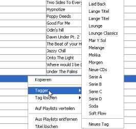
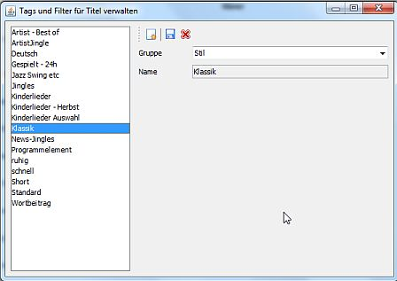

Was sind Tags und Filter?
Um Deinen Bestand an Titeln organisieren zu können und Gruppen von Titeln z. B. beim Shuffeln oder Generieren von Playlists gesondert behandeln zu können bietet Station Admin Dir zwei Ansätze an:
Tags und Filter können in Gruppen organisiert werden. Das Menü zum Taggen von Titeln (siehe unten) enthält die Gruppen dann als Untermenü - das kann übersichtlicher sein als eine einzige lange Liste. Auch im MP3-Explorer kannst Du die angezeigten Tags nach Gruppen filtern.
Titel taggen

Überall wo Du Listen von Titeln siehst - in einer Playlist, in der Titelübersicht, in Suchergebnissen - findest Du im Konextmenü die Optionen und . Wählst Du eines dieser Menüs an öffnet sich eine Liste aller existierenden statischen Tags - wähle einfach das Tag aus mit dem Du die ausgewählten Titel taggen willst bzw. das Du von den ausgewählten Titeln entfernen möchtest.
Im -Menü gibt es zusätzlich noch die Option mit der Du ganz einfach ein neues statisches Tag anlegen kannst. Alternativ funktioniert dies auch über
Tags verwalten

Über im -Menü öffnest Du einen Dialog in dem Du Deine Tags und Filter verwalten kannst.
Links siehst Du eine Liste aller Tags und Filter. Wenn Du eines auswählst werden die Detailinformationen rechts dargestellt. Bei Tags ist das nur der Name und die Gruppe, bei Filtern sind das die Filterkriterien. Du kannst den Namen bzw. die Filterkriterin ändern und durck Klick auf den  Speichern-Button speichern. Durch Klicken auf den
Speichern-Button speichern. Durch Klicken auf den  Löschen-Button kannst Du das Tag oder den Filter löschen.
Löschen-Button kannst Du das Tag oder den Filter löschen.
Zum Erzeugen eines neuen Tags oder Filter klickst Du auf  und wählst aus ob Du ein Tag oder einen Filter anlegen möchtest. Danach kannst Du Namen bzw. Filterkiterien eingeben und Deine Konfiguration speichern.
und wählst aus ob Du ein Tag oder einen Filter anlegen möchtest. Danach kannst Du Namen bzw. Filterkiterien eingeben und Deine Konfiguration speichern.
Konfiguration eines Filters
Für Filter kannst Du neben dem Namen und der Gruppe noch einige Kriterien angeben. Diese sind auf verschiedenen Tabs gruppiert.
Auf dem -Tab kannst Du Titel auf Basis von Metadaten wie Artist, Titel oder Länge auswählen:
Bei den Textfeldern kannst Du jeweils mehrere Werte angeben - verwende einen Eintrag pro Zeile. Wildcards (*) sind erlaubt. Um etwa alle CDs der "Space Night"-Reihe zu treffen würdest Du als Album "Space Night*" angeben.
Wenn Du mehrere Felder ausfüllst gelten die Kriterien in Kombination - d. h. z. B. alle Titel auf die Album und Länge passen.
Auf dem -Tab kannst Du Titel auswählen die innerhalb der letzten Stunden gespielt wurden:
Ohne die Angabe eines Wertes für die letzten x Stunden sind die weiteren Optionen ohne Bedeutung - gespielte Titel sind dann einfach kein Auswahlkriterium.
Nützlich ist diese Form von Selektion um gezielt kürzlich gespielte Titel beim Generieren einer Playlist untergewichten zu können. Man kann z. B. für ein Tag die Titel der letzten 3 Tage (78 Stunden) in der Sendung X auswählen und dieses Tag dann bei der Generierung mit der Gewichtung "sehr viel seltener" versehen um Wiederholungen zu vermeiden.
Auf dem -Tab kannst Du eine oder mehrere Playlists auswählen. Alle Titel dieser Playlists werden dann für das dynamische Tag ausgewählt und mit den anderen Kriterien abgeglichen. Auf diese Weise kannst Du Playlists auf Tags mappen.
Auf dem -Tab kannst Du eine oder mehrere statische Tags auswählen. Alle mit diesen Tags versehenen Titel werden dann durch diesen Filter ausgewählt und mit den anderen Kriterien abgeglichen.